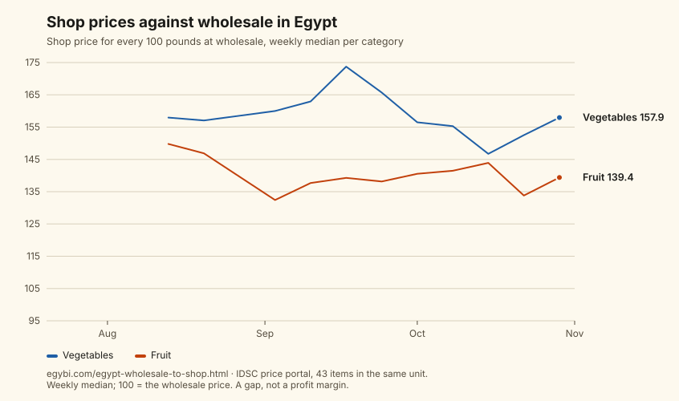

Daily prices · to · measured, not estimated
From the wholesale market to the shop: Egypt’s food price gap.
The government’s price portal publishes what the same foods cost at wholesale and in shops. Kept week by week since the summer, the two lists show how far apart they sit.
In the four weeks to 1 November 2026, vegetables cost 1.55 times their wholesale price in shops, and fruit 1.40 times (the median of 23 and 18 items). For every 100 pounds at the wholesale market, shoppers paid about 155 and 140.
That gap is steady. In the 11 weeks since 20 July 2026 in which both lists were published, the median across all 43 items stayed between 1.39 and 1.56 times.
The widest gaps: Eggplant 2.16×; Long eggplant 2.09×; Coconut 2.04×. The narrowest: Yellow Corn 1.03×; Common bean 1.13×; Pineapple 1.20×.
Between the first four weeks and the last four, the gap narrowed by more than 5% for 16 items and widened by more than 5% for 18; the other 8 moved less.
Week to week, an item’s shop and wholesale prices moved the same way only 50% of the time (348 weeks in which both changed). The gap is a difference in level that holds over months, not a weekly mark-up applied to the market price.
Left out: 33 items the wholesale list prices by the crate, carton or sack rather than by the shops’ unit (all the fish among them), and 7 whose wholesale price did not change in these weeks.
How shop prices themselves moved over the same weeks: Egypt’s food prices, measured since July.

Source: the IDSC local prices portal (Egyptian Cabinet): its retail averages across outlets, published daily, and its wholesale prices, published about weekly, kept by EgyBI since the summer. The portal does not say which wholesale market it quotes. Each week compares the median of each list, item by item, and only items priced in the same unit on both. The chart’s points are single weeks; the figures above are the median of the last four. The gap includes transport, handling and quality as well as the shop’s margin, so it is not a profit figure.
Every item compared
| Item | Gap | Wholesale | Shop |
|---|---|---|---|
| Eggplant الباذنجان الرومي | 2.16× | 6.97 | 14.76 |
| Long eggplant باذنجان عروس | 2.09× | 8.72 | 18.06 |
| Coconut جوز هند | 2.04× | 27.50 | 58.59 |
| Tomatoes الطماطم | 1.95× | 11.37 | 22.12 |
| Bell pepper فلفل رومي | 1.89× | 13.15 | 24.76 |
| White eggplant الباذنجان الأبيض | 1.83× | 9.34 | 17.34 |
| Fig تين | 1.80× | 28.00 | 50.84 |
| Squash الكوسة | 1.75× | 17.15 | 29.62 |
| Pressed dates بلح عجوة | 1.73× | 31.67 | 54.81 |
| Greenhouse Cucumber خيار صوب | 1.71× | 12.88 | 21.95 |
| Chili pepper فلفل (حامي) | 1.70× | 13.46 | 23.20 |
| Imported grapes عنب مستورد | 1.69× | 41.67 | 70.53 |
| Sweet Potatoes البطاطا | 1.68× | 8.31 | 14.03 |
| Corchorus الملوخية | 1.67× | 10.85 | 17.70 |
| Cabbage كرنب واحدة | 1.62× | 23.42 | 37.48 |
| Yellow carrot جزر اصفر (بعرش) | 1.55× | 10.09 | 15.73 |
| Beets (kg) بنجر (كيلو) | 1.51× | 15.67 | 23.28 |
| Local Apples التفاح المحلي | 1.49× | 39.81 | 59.30 |
| Plum البرقوق | 1.49× | 50.00 | 74.39 |
| Cantaloupe كنتالوب | 1.46× | 17.52 | 25.49 |
| Potatoes البطاطس | 1.45× | 15.90 | 23.21 |
| Peach الخوخ | 1.42× | 42.29 | 60.16 |
| Watermelon البطيخ واحدة | 1.41× | 60.00 | 83.28 |
| Fresh chicken الدواجن الطازجة | 1.38× | 77.50 | 106.57 |
| Persimmon كاكا | 1.38× | 37.75 | 50.86 |
| Yellow carrot جزر اصفر | 1.35× | 18.48 | 25.01 |
| Imported banana موز مستورد | 1.35× | 40.21 | 53.46 |
| Beet unit بنجر (الواحدة) واحدة | 1.35× | 3.53 | 4.74 |
| Kiwifruit كيوي واحدة | 1.34× | 8.17 | 10.78 |
| Turnip اللفت | 1.33× | 6.88 | 9.23 |
| Banana الموز البلدي | 1.31× | 29.95 | 38.36 |
| Spinach سبانخ | 1.31× | 17.25 | 22.62 |
| Golden Apples تفاح جولدن | 1.30× | 63.17 | 81.60 |
| Taro القلقاس | 1.27× | 20.75 | 26.57 |
| Kiwifruit (cartons) كيوي (كرتونة) كرتونة | 1.25× | 393.75 | 496.57 |
| Local lemon الليمون البلدي | 1.24× | 28.41 | 36.50 |
| Onions البصل | 1.24× | 14.72 | 18.20 |
| Okra البامية | 1.23× | 49.27 | 59.33 |
| Apple التفاح | 1.21× | 72.53 | 88.60 |
| Grapefruit جريب فروت | 1.21× | 25.00 | 30.41 |
| Pineapple أناناس واحدة | 1.20× | 100.00 | 119.97 |
| Common bean الفاصوليا الخضراء | 1.13× | 33.79 | 37.89 |
| Yellow Corn الذرة الصفراء شيكارة | 1.03× | 755.00 | 775.31 |
Put this chart on your own site.
An image that links back here and is rebuilt with the data. Please keep the credit line inside the image.
<a href="https://egybi.com/egypt-wholesale-to-shop.html"><img src="https://egybi.com/charts/egypt-wholesale-to-shop.svg" alt="Shop prices against wholesale in Egypt: shop price for every 100 pounds at wholesale, by category (EgyBI)" width="846" style="max-width:100%;height:auto" loading="lazy"></a>Or open the chart on its own to save it.